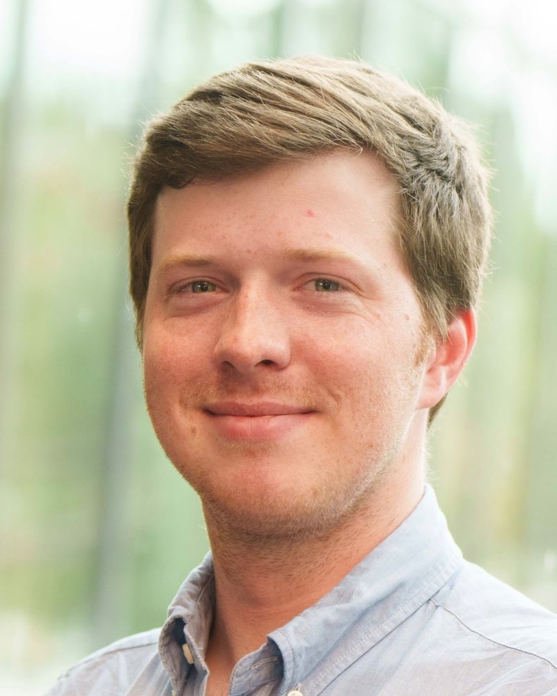

Ian H. Hardman
I am a PhD candidate in the Dept. of Agricultural and Resource Economics (ARE) at UC Berkeley and a graduate student affiliate at the Energy Institute at Haas. Additionally, I am a Research Affiliate at Stanford University's Program on Energy and Sustainable Development (PESD).
I am an applied microeconomist who studies how environmental regulation and liability rules shape firm behavior in extractive industries. My research focuses on end-of-life decisions: whether and when firms decommission aging and marginal assets, and who bears the cost if they do not.
Primary fields: Energy and Environmental Economics, Industrial Organization
Education
- Ph.D., Agricultural and Resource Economics
- B.A., Economics, with Highest Distinction
Contact
Energy Institute at Haas
317 Giannini Hall
University of California, Berkeley, CA 94720-3310